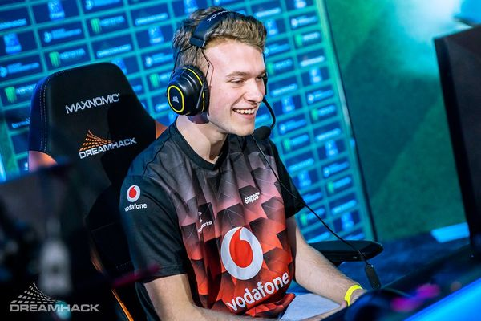

A Nosgoth fejlesztőcsapata egy abszurd, ám rendkívül szórakoztató ötletét valósította meg a Rocket League képében: egy olyan játékról beszélünk, amelyben modifikálható szuperautókkal próbálunk beütni egy hatalmas labdát az ellenfél kapujába, vagyis leegyszerűsítve járgányokkal focizhatunk.
A játékmenet során lehetőségünk van egy rövid egyjátékos móddal próbára tenni a tudásunkat és új tartalmakat feloldva fejlődni, ám a valódi játék a multiplayerrel kezdődik.
Ez jelenti a Rocket League lényegét, hiszen villámgyors matchmaking gondoskodik arról, hogy pörgős, ötperces meccsekben élvezzük az autós focit.
| Játék adatai |
|---|
| Fejlesztő: Psyonix |
| Kiadó: Psyonix |
| Platform: PC, PlayStation 4, Xbox One |
| Stílus: Autóverseny, Sport |
| Megjelenés: 2015.07.07. |
| Korhatár: 3+ |
Az Acer bejelentette, hogy az EMEA Predator League 2022 versenyén keresztül szeretné támogatni az alulról építkező e-sport versenyek jövőjét.
A hardveróriás a Rocket League-et választott célpontjául, amivel most 15 ország atlétái mérettethetik meg magukat.
Ennek egy darabját vihetik haza a győztesek, hardver nyereményekkel együtt.
A meccseken magyar játékosok is részt vehetnek képességszinttől függetlenül.
Akit érdekel a lehetőség az látogasson el az esemény weboldalára, és adja le a jelentkezését október 21-ig bezárólag.

Magyar Rocket League játékos meg sok másik játékkal játszik és youtuber.

Magyar Rocket League Játékos youtuber és GTA 5 játékos.
Ő egy Angol Rocket League játékos Versenyeken vesz részt.